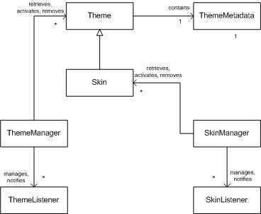
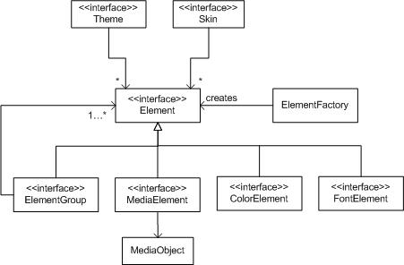
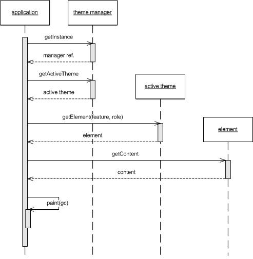

|
|||||||||
| PREV PACKAGE NEXT PACKAGE | FRAMES NO FRAMES | ||||||||
See:
Description
| Interface Summary | |
|---|---|
| ColorElement | Represents a color element with an ARGB value. |
| Element | Represents a customizable element in an appearance. |
| ElementGroup | Represents a group of elements. |
| FontElement | Represents a customizable element that describes a font. |
| MediaElement | Represents a customizable element containing a media object. |
| Skin | Represents a skin, a collection of customization data specific to an application. |
| SkinListener | Listener interface for applications interested in skin related events in the system. |
| Theme | Represents a system wide user interface theme. |
| ThemeListener | Listener interface for applications interested in theme related events in the system. |
| Class Summary | |
|---|---|
| Capabilities | Returns static information about the capabilities of the Mobile User Interface Customization API implementation found in the device. |
| ElementFactory | Creates elements to be used in themes and skins. |
| MediaObject | Represents the media object content of an element. |
| SkinManager | Manages skins of some application in the device. |
| ThemeManager | Provides applications access to themes installed in the device or in the application's JAR file. |
| ThemeMetadata | Stores the metadata associated with an appearance. |
| ToolkitCapabilities | Returns static information about the user interface toolkit related capabilities of the Mobile User Interface Customization API implementation found in the device. |
| Exception Summary | |
|---|---|
| ElementException | This is a superclass for exceptions thrown when there is an error that involves a customizable element. |
| ElementNotCustomizableException | Thrown to indicate that the element is not customizable. |
| ElementNotFoundException | Thrown to indicate that an element was not found in a theme or skin. |
| ModifyNotSupportedException | Thrown when a modify operation is attempted and the implementation does not support modify operations. |
| SkinException | Thrown by SkinManager methods or updateApplicationElement
in Skin if a skin-related operation fails. |
| SkinNotFoundException | Thrown by SkinManager when a skin is not found upon retrieval. |
| ThemeException | Thrown when there is an error condition related to a theme. |
| ThemeNotFoundException | Thrown when a theme is not found when retrieving, changing or deleting a theme. |
| UnsupportedContentException | Thrown when setting the content of a customizable element and the type of the new content is not supported by the implementation. |
Classes and interfaces for the Mobile User Interface Customization API (JSR 258).
The javax.microedition.theme package classes are used
by Java Micro Edition applications interested in obtaining information
about the themes and skins present in the system. To modify elements in
appearances the implementation MUST
support the optional modify operations. Modifying appearances, like
creating or removing them, requires appropriate security permissions as
detailed in Appendix B, "Recommended security practices".
Themes and skins, collectively known as appearances, are represented as classes and interfaces in the Mobile User Interface Customization API as shown in the following diagram.

Theme and skin related classes and interfaces
A theme contains system-wide customization definitions for basic customizable elements and also platform specific and user interface toolkit specific customizations. Skins contain similar customization definitions, and additionally also customizations that are only meaningful to some specific target application.
Themes and skins have a uniquely identifying name that is used
by applications to target specific themes and skins. The name is constructed
using a combination of an appearance specific name, a version number and the
reverse domain name of the vendor.
By supplying the name an application can obtain a reference to a
Theme or Skin instance,
and can then proceed to query information about it.
If the implementation supports modify operations, an application can also construct a theme or skin programmatically by supplying an appearance descriptor and the media objects it refers to.
The Mobile User Interface Customization API can be used to activate a theme for system-wide effect, or to activate a skin to change the look of an individual application.
If no theme has been explicitly activated, either through
the API or by using some native theme management applications,
the system default theme SHOULD
be in effect. Each customizable element
gets its default value from this default theme. In code, it is
referred to by
the SYSTEM_DEFAULT_THEME constant defined in
the ThemeManager class.
All applications MUST start up with no skin activated. It is the application's responsibility to store any information related to which skin it wants to use, and to activate the skin when the application starts up. It is recommended that applications do this before the main user interface is shown.
The ThemeManager
SkinManager classes provide applications with
information about and operations pertaining to themes and skins, respectively.
By calling the methods of ThemeManager an application
can list the themes currently installed the device, delete them or create
new themes by supplying a descriptor and related content.
The SkinManager class
has the same features for skins, and allows applications to provide
users with skin-changing facilities.
Both types of managers also provide information about the elements that are customizable and their current values in a given theme or skin. Applications can determine if a certain element is supported or not, and what media types are allowed as the element's content. This helps to construct custom components that blend in with the general appearance of the user interface.
Applications can register to listen for notifications about events
related to themes and skins in the device. The manager classes send
notifications to registered listeners that implement the
ThemeListener
and/or SkinListener interface.
The content of the element is used to provide the actual customized appearance using simple values or media objects. Simple values are embedded in the element, whereas media objects (such as image and sound files) are referred to from the element using a relative URI.
The static factory methods in the
ElementFactory class
can be used to create new elements for the purpose of updating
existing elements in a theme or skin. Elements can be freely
created, but updating themes and skins is only possible if the
implementation supports modify operations.
The following class diagram presents the element related classes and interfaces.

Element-related classes and interfaces
Exceptions derived from ElementException
are thrown in situations involving a non-existing elements or
customization policy violations.
When an applications wants to create custom controls and use
the contents of elements found in
themes and skins which are installed and available in the device,
it will need to obtain
an instance of ThemeManager or
SkinManager and use it to get a
reference to the theme or skin.
The manager instance can be queried about some element in the relevant appearance by passing the feature and the role of the element. The manager looks for the element as detailed in the "Customizable element lookup" section and returns a reference to the element if found, or throws an exception if a customization of the element is not found.
When an element instance has been retrieved, the application can query it to get the contents (media object, color or other value) and act upon the value. In the case of graphical elements the application typically renders the content into some graphics context.
The following sequence diagram illustrates the retrieval of a manager instance and an element.

Retrieving an element from the currently active theme for painting
Exceptions thrown by the methods in this API generally take one or more
string parameters. They represent a detail message or other relevant information.
The constructors of the exception classes do not throw exceptions based on the
values of these parameters. If not explicitly specified otherwise, all string
parameters passed to exception class
constructors should be non-empty and
non-null.
|
|||||||||
| PREV PACKAGE NEXT PACKAGE | FRAMES NO FRAMES | ||||||||